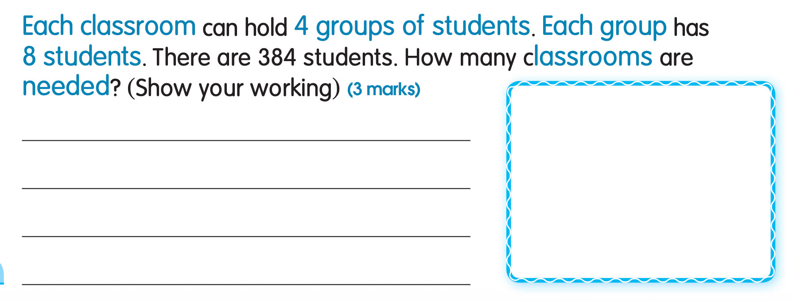
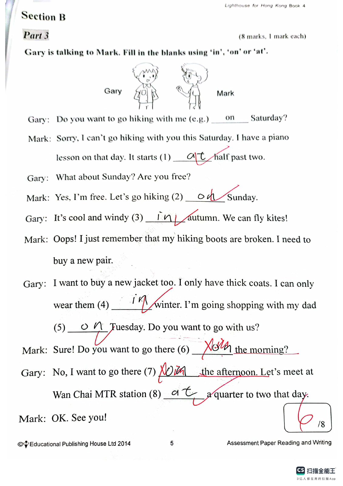
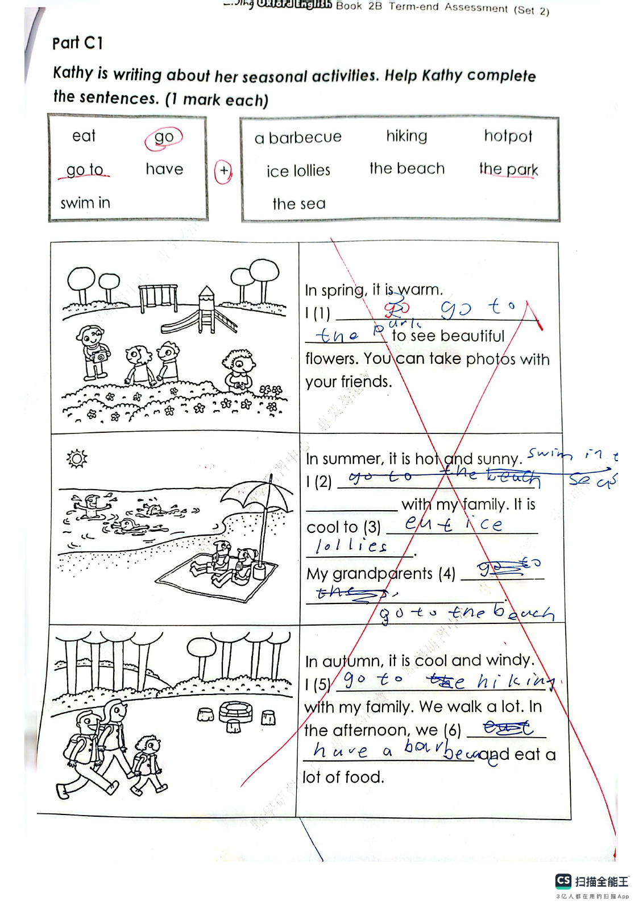
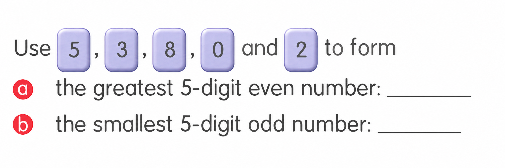
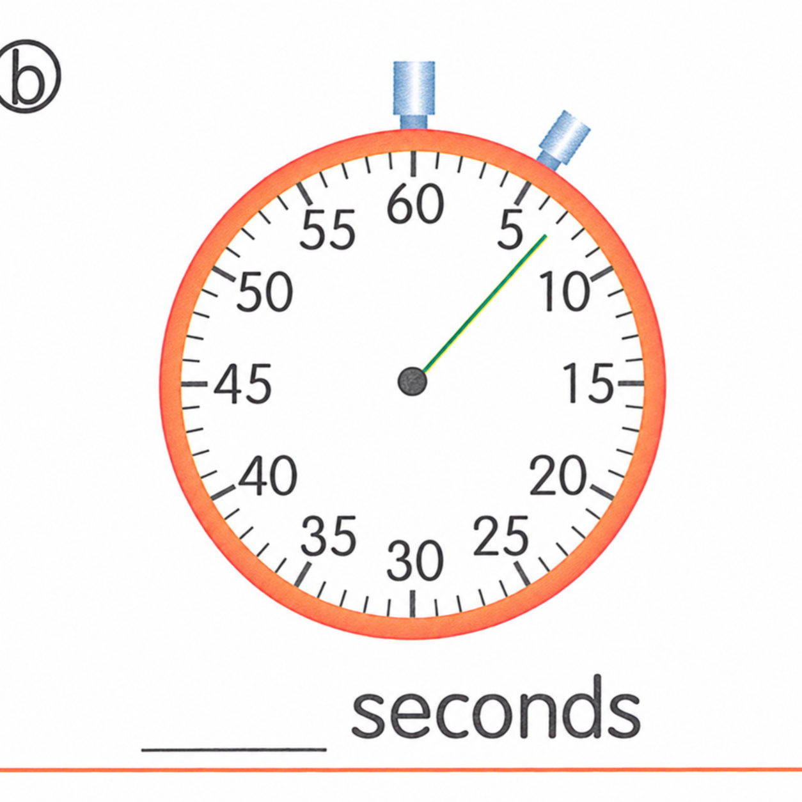

Answer: 384 ÷ 8 ÷ 4 = 12 classrooms (or 384 ÷ (4 × 8) = 12).
已掌握
| # | 单词/词组 | 中文意思 | 例句/说明 | 已掌握 |
|---|---|---|---|---|
| noun 名词 | ||||
| 1 | parents | 父母 | My parents love me. | |
| 2 | library | 图书馆 | I read books in the library. | |
| 3 | playroom | 游戏房 | The children are in the playroom. | |
| 4 | friend | 朋友 | My friend is kind. | |
| 5 | playground | 操场；游乐场 | The children run in the playground. | |
| 6 | model | 模型 | I build a car model. | |
| 7 | tail | 尾巴 | The dog wags its tail. | |
| 8 | gift | 礼物 | I got a gift. | |
| 9 | Sunday | 周日 | We visit Grandma on Sunday. | |
| verb 动词 | ||||
| 10 | feed | 喂养 | I feed my fish every day. | |
| 11 | draw | 绘画 | I draw a picture. | |
| preposition 介词 | ||||
| 12 | opposite | 在......对面 | The library is opposite the school. | |
| phrase 短语 | ||||
| 13 | turn right | 右转 | Turn right after the shop. | |
| 14 | take a photo | 照相 | I take a photo of my cat. | |
| 15 | set the table | 摆餐具 | I set the table before dinner. | |
| adjective 形容词 | ||||
| 16 | hungry | 饥饿的 | I am hungry now. | |
| 17 | brave | 勇敢的 | The brave boy helps others. | |
| 18 | polite | 礼貌的 | It is polite to say thank you. | |
| uncategorized 未分类 | ||||
| 19 | amazing | 很好的 | We watched an amazing magic show. | |
| 20 | find | 找到 | I cannot find my pencil. | |
| # | 单词/词组 | 中文意思 | 例句/说明 | 已掌握 |
|---|---|---|---|---|
| adjective 形容词 | ||||
| 1 | smart | 聪明的 | The smart girl solved the puzzle. | |
| 2 | cute | 可爱的 | There are many cute dogs in the animal shelter. | |
| noun 名词 | ||||
| 3 | buffet | 自助餐 | We had lunch at a buffet. | |
| 4 | example | 例子 | This is an example. | |
| 5 | postman | 邮递员 | The postman brings letters. | |
| 6 | washing | 洗好的衣物 | The washing is dry now. | |
| 7 | prepositions | 介词 | We are learning prepositions today. | |
| 8 | moral | 道理 | The story has a moral. | |
| 9 | roundabout | 旋转木马 | The roundabout is in the playground. | |
| 10 | picnic | 野餐 | We have a picnic in the park. | |
| 11 | cafe | 咖啡馆 | We had drinks at a cafe. | |
| 12 | PE | 体育课 | He's good at PE. | |
| 13 | Music | 音乐 | We have Music on Friday. | |
| 14 | receipt | 收据 | Eric has a receipt from a shop. | |
| 15 | biscuit | 饼干 | Would you like a biscuit with your milk? | |
| 16 | present | 礼物 | I gave my friend a birthday present. | |
| 17 | turkey | 火鸡 | We had roast turkey for Christmas dinner. | |
| noun phrase 名词短语 | ||||
| 18 | board game | 桌游 | We play a board game after school. | |
| 19 | role model | 榜样；模范 | She is a role model for younger students. | |
| 20 | the school concert | 学校音乐会 | The school concert is on the ninth of July. | |
| 21 | soft cake | 松软蛋糕 | We shared a soft cake after lunch. | |
| 22 | unit price | 单价 | The unit price of each apple is two dollars. | |
| verb 动词 | ||||
| 23 | yawn | 打哈欠 | I yawn when I am tired. | |
| 24 | bark | （狗）吠叫 | Dogs sometimes bark at strangers. | |
| 25 | contact | 联系 | Please contact the class teacher if you have any questions. | |
| 26 | join | 参加，加入 | I would like to join the school choir. | |
| preposition 介词 | ||||
| 27 | between | 在……之间 | His classroom is between Classroom 3A and Classroom 3C. | |
| verb phrase 动词短语 | ||||
| 28 | turn off | 关掉（开关） | We always turn off the lights when we leave a room. | |
| 29 | turn on | 打开（电器） | It only takes a few seconds to turn on your computer again. | |
| quantifier 数量限定词 | ||||
| 30 | a lot of | 许多 | I get a lot of presents at Christmas. | |
| # | 单词/词组 | 中文意思 | 例句/说明 | 已掌握 |
|---|---|---|---|---|
| time/date 时间日期 | ||||
| 1 | March | 三月 | March is the third month. | |
| 2 | May | 五月 | May is the fifth month. | |
| 3 | August | 八月 | August is the eighth month. | |
| 4 | Wednesday | 星期三 | Wednesday is a weekday. | |
| time unit 时间单位 | ||||
| 5 | week | 周 | A week has 7 days. | |
| directions 方向 | ||||
| 6 | east | 东 | The sun rises in the east. | |
| numbers 数字 | ||||
| 7 | one | 1 | One is 1. | |
| 8 | two | 2 | Two is 2. | |
| 9 | six | 6 | Six is 6. | |
| 10 | eight | 8 | Eight is 8. | |
| 11 | ten | 10 | Ten is 10. | |
| solid shape 立体图形 | ||||
| 12 | hexagonal prism | 六棱柱 | A hexagonal prism has hexagonal faces. | |
| plane shape 平面图形 | ||||
| 13 | Pentagon | 五边形 | A pentagon has five sides. | |
| 14 | square | 正方形 | A square has four equal sides. | |
| geometry 几何 | ||||
| 15 | acute angle | 锐角 | An acute angle is smaller than a right angle. | |
| # | 单词/词组 | 中文意思 | 例句/说明 | 已掌握 |
|---|---|---|---|---|
| numbers 数字 | ||||
| 1 | 3-digit number | 三位数 | A 3-digit number has three digits. | |
| operations 运算 | ||||
| 2 | addition | 加法 | Addition means putting numbers together. | |
| geometry 几何 | ||||
| 3 | grid | 网格 | A grid helps us find positions. | |
| 4 | parallel | 平行 | Parallel lines never meet. | |
| 5 | line segment | 线段 | Draw a line segment. | |
| question word 题目词 | ||||
| 6 | compare | 比较 | We compare two numbers. | |
| 7 | respectively | 分别地 | Tom and Ben have 2 and 3 books respectively. | |
| shape 形状 | ||||
| 8 | circle | 圈；圆 | Draw a circle around the answer. | |
| place value 位值 | ||||
| 9 | tens | 十位 | The digit is in the tens place. | |
| comparison 比较 | ||||
| 10 | fewer | 更少 | There are fewer apples in this box. | |
| 11 | shortest | 最短的 | Find the shortest line. | |
| time/date 时间日期 | ||||
| 12 | hour hand | 时针 | At three o'clock, the hour hand points to 3. | |
| 13 | common year | 平年 | A common year has 365 days. | |
| 14 | large division | 大格（钟面上相邻两个小时数字之间的一格） | The hour hand moves one large division in one hour. | |
| 15 | small division | 小格（钟面上的一分钟刻度） | The minute hand moves one small division in one minute. | |
| position 位置 | ||||
| 16 | arrow | 箭头 | The arrow points to the right. | |
| operations calculation 运算 | ||||
| 17 | product | 积 | The product is the answer in multiplication. | |
| 18 | dividend | 被除数 | The dividend is divided by the divisor. | |
| 19 | remainder | 余数 | The remainder is left after division. | |
| 20 | horizontal form | 横式形式 | Write it in horizontal form. | |
| currency money 货币 | ||||
| 21 | pay for | 支付 | I pay for the book. | |
| 22 | note | 纸币 | This is a five-dollar note. | |
| 23 | change | 零钱 | Count the change after paying. | |
| 24 | expensive | 昂贵的 | This toy costs $50. It is more expensive than the $20 toy. | |
| measurement 测量 | ||||
| 25 | measure | 测量 | We measure the length with a ruler. | |
| 26 | length | 长度 | Find the length of the line. | |
| 27 | width | 宽度 | The rectangle has a length of 8 cm and a width of 5 cm. | |
| 句型结构 | ||||
| 28 | ... is to the north of ... | ......位于......的北侧。 | The playground is to the north of the hall. | |
| plane shape 平面图形 | ||||
| 29 | upper base | 上底 | The upper base of this trapezium is 4 cm long. | |
| 30 | isosceles trapezium | 等腰梯形 | An isosceles trapezium has two equal legs. | |




